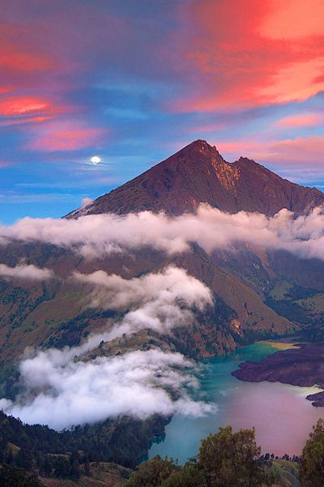
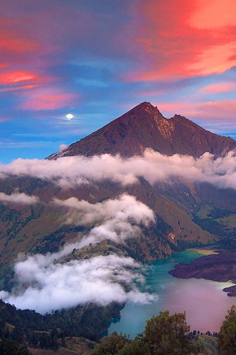

About Gunung Rinjani
Gunung Rinjani, dengan ketinggian 3.726 meter, adalah gunung berapi tertinggi kedua di Indonesia, berlokasi di Pulau Lombok, Nusa Tenggara Barat. Gunung ini terkenal dengan pemandangan spektakuler, terutama Danau Segara Anak yang terletak di kawahnya.
Keunikan
Pendaki sering bermalam di sekitar danau untuk menikmati keindahan alam, termasuk sumber air panas alami. Trek pendakian menawarkan pengalaman menantang namun memuaskan, dengan jalur populer seperti Sembalun dan Senaru.
Nilai Budaya
Rinjani juga memiliki nilai spiritual bagi masyarakat setempat dan sering menjadi tempat ritual adat suku Sasak dan Bali. Perpaduan antara keindahan, petualangan, dan budaya menjadikannya destinasi wisata favorit.
Gallery
 


Our Teams
Alexander Noventino Lambut
NIM: 2401010802
Alan Zebulon Mulik
NIM: 2401010271
Rivaldi Karyoadi
NIM: 2401010246
Eka Ramadani
NIM: 2401010287
Astania Bobo
NIM: 2401010281
Contact Us
|| wisatawan1242gmail.com ||
|| 0812344567 ||